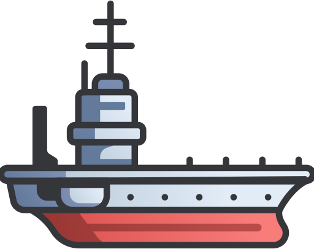
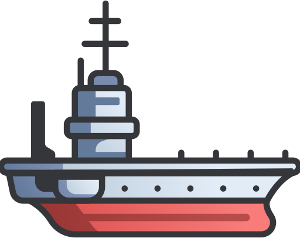
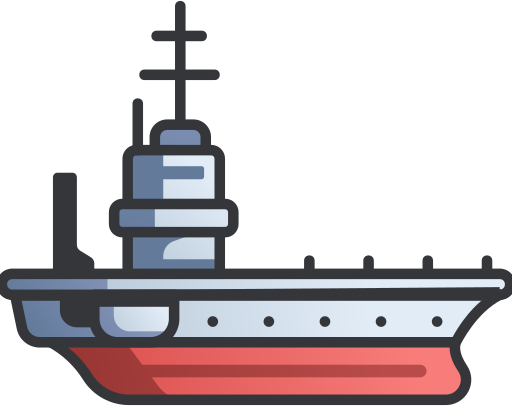

O código deste programa possui algumas funções com temporizador, descreva passo-a-passo o que as funções "Subir", "Desce" e "Descer" fazem. Após fazer a descrição, altere o código para que o foguete pouse no navio.

 
